Math Symbols List
List of all mathematical symbols and signs - meaning and examples.
Basic math symbols
| Symbol | Symbol Name | Meaning / definition | Example |
|---|---|---|---|
| = | equals sign | equality | 5 = 2+3 5 is equal to 2+3 |
| ≠ | not equal sign | inequality | 5 ≠ 4 5 is not equal to 4 |
| ≈ | approximately equal | approximation | sin(0.01) ≈ 0.01, x ≈ y means x is approximately equal to y |
| > | strict inequality | greater than | 5 > 4 5 is greater than 4 |
| < | strict inequality | less than | 4 < 5 4 is less than 5 |
| ≥ | inequality | greater than or equal to | 5 ≥ 4, x ≥ y means x is greater than or equal to y |
| ≤ | inequality | less than or equal to | 4 ≤ 5, x ≤ y means x is less than or equal to y |
| ( ) | parentheses | calculate expression inside first | 2 × (3+5) = 16 |
| [ ] | brackets | calculate expression inside first | [(1+2)×(1+5)] = 18 |
| + | plus sign | addition | 1 + 1 = 2 |
| − | minus sign | subtraction | 2 − 1 = 1 |
| ± | plus - minus | both plus and minus operations | 3 ± 5 = 8 or -2 |
| ± | minus - plus | both minus and plus operations | 3 ∓ 5 = -2 or 8 |
| * | asterisk | multiplication | 2 * 3 = 6 |
| × | times sign | multiplication | 2 × 3 = 6 |
| ⋅ | multiplication dot | multiplication | 2 ⋅ 3 = 6 |
| ÷ | division sign / obelus | division | 6 ÷ 2 = 3 |
| / | division slash | division | 6 / 2 = 3 |
| — | horizontal line | division / fraction | 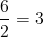 |
| mod | modulo | remainder calculation | 7 mod 2 = 1 |
| . | period | decimal point, decimal separator | 2.56 = 2+56/100 |
| ab | power | exponent | 23 = 8 |
| a^b | caret | exponent | 2 ^ 3 = 8 |
| √a | square root | √a ⋅ √a = a |
√9 = ±3 |
| 3√a | cube root | 3√a ⋅ 3√a ⋅ 3√a = a | 3√8 = 2 |
| 4√a | fourth root | 4√a ⋅ 4√a ⋅ 4√a ⋅ 4√a = a | 4√16 = ±2 |
| n√a | n-th root (radical) | for n=3, n√8 = 2 | |
| % | percent | 1% = 1/100 | 10% × 30 = 3 |
| ‰ | per-mille | 1‰ = 1/1000 = 0.1% | 10‰ × 30 = 0.3 |
| ppm | per-million | 1ppm = 1/1000000 | 10ppm × 30 = 0.0003 |
| ppb | per-billion | 1ppb = 1/1000000000 | 10ppb × 30 = 3×10-7 |
| ppt | per-trillion | 1ppt = 10-12 | 10ppt × 30 = 3×10-10 |
Geometry symbols
| Symbol | Symbol Name | Meaning / definition | Example |
|---|---|---|---|
| ∠ | angle | formed by two rays | ∠ABC = 30° |
| measured angle | |||
| spherical angle | |||
| ∟ | right angle | = 90° | α = 90° |
| ° | degree | 1 turn = 360° | α = 60° |
| deg | degree | 1 turn = 360deg | α = 60deg |
| ′ | prime | arcminute, 1° = 60′ | α = 60°59′ |
| ″ | double prime | arcsecond, 1′ = 60″ | α = 60°59′59″ |
| line | infinite line | ||
| AB | line segment | line from point A to point B | |
| ray | line that start from point A | ||
| arc | arc from point A to point B | ||
| ⊥ | perpendicular | perpendicular lines (90° angle) | AC ⊥ BC |
| ∥ | parallel | parallel lines | AB ∥ CD |
| ≅ | congruent to | equivalence of geometric shapes and size | ∆ABC≅ ∆XYZ |
| ~ | similarity | same shapes, not same size | ∆ABC~ ∆XYZ |
| Δ | triangle | triangle shape | ΔABC≅ ΔBCD |
| |x-y| | distance | distance between points x and y | | x-y | = 5 |
| π | pi constant | π = 3.141592654... is the ratio between the circumference and diameter of a circle |
c = π⋅d = 2⋅π⋅r |
| rad | radians | radians angle unit | 360° = 2π rad |
| c | radians | radians angle unit | 360° = 2π c |
| grad | gradians / gons | grads angle unit | 360° = 400 grad |
| g | gradians / gons | grads angle unit | 360° = 400 g |
Algebra symbols
| Symbol | Symbol Name | Meaning / definition | Example |
|---|---|---|---|
| x | x variable | unknown value to find | when 2x = 4, then x = 2 |
| ≡ | equivalence | identical to | |
| ≜ | equal by definition | equal by definition | |
| := | equal by definition | equal by definition | |
| ~ | approximately equal | weak approximation | 11 ~ 10 |
| ≈ | approximately equal | approximation | sin(0.01) ≈ 0.01 |
| ∝ | proportional to | proportional to | y ∝ x when y = kx, k constant |
| ∞ | lemniscate | infinity symbol | |
| ≪ | much less than | much less than | 1 ≪ 1000000 |
| ≫ | much greater than | much greater than | 1000000 ≫ 1 |
| ( ) | parentheses | calculate expression inside first | 2 * (3+5) = 16 |
| [ ] | brackets | calculate expression inside first | [(1+2)*(1+5)] = 18 |
| { } | braces | set | |
| ⌊x⌋ | floor brackets | rounds number to lower integer | ⌊4.3⌋ = 4 |
| ⌈x⌉ | ceiling brackets | rounds number to upper integer | ⌈4.3⌉ = 5 |
| x! | exclamation mark | factorial | 4! = 1*2*3*4 = 24 |
| | x | | vertical bars | absolute value | | -5 | = 5 |
| f (x) | function of x | maps values of x to f(x) | f (x) = 3x+5 |
| (f ∘ g) | function composition | (f ∘ g) (x) = f (g(x)) | f (x)=3x,g(x)=x-1 ⇒(f ∘ g)(x)=3(x-1) |
| (a,b) | open interval | (a,b) = {x | a < x < b} | x∈ (2,6) |
| [a,b] | closed interval | [a,b] = {x | a ≤ x ≤ b} | x ∈ [2,6] |
| ∆ | delta | change / difference | ∆t = t1 - t0 |
| ∆ | discriminant | Δ = b2 - 4ac | |
| ∑ | sigma | summation - sum of all values in range of series | ∑ xi= x1+x2+...+xn |
| ∑∑ | sigma | double summation | 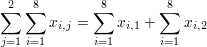 |
| ∏ | capital pi | product - product of all values in range of series | ∏ xi=x1∙x2∙...∙xn |
| e | e constant / Euler's number | e = 2.718281828... | e = lim (1+1/x)x , x→∞ |
| γ | Euler-Mascheroni constant | γ = 0.5772156649... | |
| φ | golden ratio | golden ratio constant | |
| π | pi constant | π = 3.141592654... is the ratio between the circumference and diameter of a circle |
c = π⋅d = 2⋅π⋅r |
Linear Algebra Symbols
| Symbol | Symbol Name | Meaning / definition | Example |
|---|---|---|---|
| · | dot | scalar product | a · b |
| × | cross | vector product | a × b |
| A⊗B | tensor product | tensor product of A and B | A ⊗ B |
| 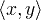 | inner product | ||
| [ ] | brackets | matrix of numbers | |
| ( ) | parentheses | matrix of numbers | |
| | A | | determinant | determinant of matrix A | |
| det(A) | determinant | determinant of matrix A | |
| || x || | double vertical bars | norm | |
| AT | transpose | matrix transpose | (AT)ij = (A)ji |
| A† | Hermitian matrix | matrix conjugate transpose | (A†)ij = (A)ji |
| A* | Hermitian matrix | matrix conjugate transpose | (A*)ij = (A)ji |
| A -1 | inverse matrix | A A-1 = I | |
| rank(A) | matrix rank | rank of matrix A | rank(A) = 3 |
| dim(U) | dimension | dimension of matrix A | dim(U) = 3 |
Probability and statistics symbols
| Symbol | Symbol Name | Meaning / definition | Example |
|---|---|---|---|
| P(A) | probability function | probability of event A | P(A) = 0.5 |
| P(A ⋂ B) | probability of events intersection | probability that of events A and B | P(A⋂B) = 0.5 |
| P(A ⋃ B) | probability of events union | probability that of events A or B | P(A⋃B) = 0.5 |
| P(A | B) | conditional probability function | probability of event A given event B occured | P(A | B) = 0.3 |
| f (x) | probability density function (pdf) | P(a ≤ x ≤ b) = ∫ f (x) dx | |
| F(x) | cumulative distribution function (cdf) | F(x) = P(X≤ x) | |
| μ | population mean | mean of population values | μ = 10 |
| E(X) | expectation value | expected value of random variable X | E(X) = 10 |
| E(X | Y) | conditional expectation | expected value of random variable X given Y | E(X | Y=2) = 5 |
| var(X) | variance | variance of random variable X | var(X) = 4 |
| σ2 | variance | variance of population values | σ2 = 4 |
| std(X) | standard deviation | standard deviation of random variable X | std(X) = 2 |
| σX | standard deviation | standard deviation value of random variable X | σX = 2 |
| 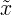 | median | middle value of random variable x | 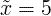 |
| cov(X,Y) | covariance | covariance of random variables X and Y | cov(X,Y) = 4 |
| corr(X,Y) | correlation | correlation of random variables X and Y | corr(X,Y) = 0.6 |
| ρX,Y | correlation | correlation of random variables X and Y | ρX,Y = 0.6 |
| ∑ | summation | summation - sum of all values in range of series | 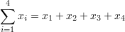 |
| ∑∑ | double summation | double summation | |
| Mo | mode | value that occurs most frequently in population | |
| MR | mid-range | MR = (xmax+xmin)/2 | |
| Md | sample median | half the population is below this value | |
| Q1 | lower / first quartile | 25% of population are below this value | |
| Q2 | median / second quartile | 50% of population are below this value = median of samples | |
| Q3 | upper / third quartile | 75% of population are below this value | |
| x | sample mean | average / arithmetic mean | x = (2+5+9) / 3 = 5.333 |
| s 2 | sample variance | population samples variance estimator | s 2 = 4 |
| s | sample standard deviation | population samples standard deviation estimator | s = 2 |
| zx | standard score | zx = (x-x) / sx | |
| X ~ | distribution of X | distribution of random variable X | X ~ N(0,3) |
| N(μ,σ2) | normal distribution | gaussian distribution | X ~ N(0,3) |
| U(a,b) | uniform distribution | equal probability in range a,b | X ~ U(0,3) |
| exp(λ) | exponential distribution | f (x) = λe-λx , x≥0 | |
| gamma(c, λ) | gamma distribution | f (x) = λ c xc-1e-λx / Γ(c), x≥0 | |
| χ 2(k) | chi-square distribution | f (x) = xk/2-1e-x/2 / ( 2k/2 Γ(k/2) ) | |
| F (k1, k2) | F distribution | ||
| Bin(n,p) | binomial distribution | f (k) = nCk pk(1-p)n-k | |
| Poisson(λ) | Poisson distribution | f (k) = λke-λ / k! | |
| Geom(p) | geometric distribution | f (k) = p(1-p) k | |
| HG(N,K,n) | hyper-geometric distribution | ||
| Bern(p) | Bernoulli distribution |
Combinatorics Symbols
| Symbol | Symbol Name | Meaning / definition | Example |
|---|---|---|---|
| n! | factorial | n! = 1⋅2⋅3⋅...⋅n | 5! = 1⋅2⋅3⋅4⋅5 = 120 |
| nPk | permutation | 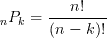 | 5P3 = 5! / (5-3)! = 60 |
| nCk
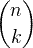 |
combination | 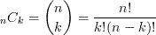 | 5C3 = 5!/[3!(5-3)!]=10 |
Set theory symbols
| Symbol | Symbol Name | Meaning / definition | Example |
|---|---|---|---|
| { } | set | a collection of elements | A = {3,7,9,14}, B = {9,14,28} |
| A ∩ B | intersection | objects that belong to set A and set B | A ∩ B = {9,14} |
| A ∪ B | union | objects that belong to set A or set B | A ∪ B = {3,7,9,14,28} |
| A ⊆ B | subset | A is a subset of B. set A is included in set B. | {9,14,28} ⊆ {9,14,28} |
| A ⊂ B | proper subset / strict subset | A is a subset of B, but A is not equal to B. | {9,14} ⊂ {9,14,28} |
| A ⊄ B | not subset | set A is not a subset of set B | {9,66} ⊄ {9,14,28} |
| A ⊇ B | superset | A is a superset of B. set A includes set B | {9,14,28} ⊇ {9,14,28} |
| A ⊃ B | proper superset / strict superset | A is a superset of B, but B is not equal to A. | {9,14,28} ⊃ {9,14} |
| A ⊅ B | not superset | set A is not a superset of set B | {9,14,28} ⊅ {9,66} |
| 2A | power set | all subsets of A | |
| 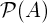 | power set | all subsets of A | |
| A = B | equality | both sets have the same members | A={3,9,14}, B={3,9,14}, A=B |
| Ac | complement | all the objects that do not belong to set A | |
| A \ B | relative complement | objects that belong to A and not to B | A = {3,9,14}, B = {1,2,3}, A-B = {9,14} |
| A - B | relative complement | objects that belong to A and not to B | A = {3,9,14}, B = {1,2,3}, A-B = {9,14} |
| A ∆ B | symmetric difference | objects that belong to A or B but not to their intersection | A = {3,9,14}, B = {1,2,3}, A ∆ B = {1,2,9,14} |
| A ⊖ B | symmetric difference | objects that belong to A or B but not to their intersection | A = {3,9,14}, B = {1,2,3}, A ⊖ B = {1,2,9,14} |
| a∈A | element of, belongs to |
set membership | A={3,9,14}, 3 ∈ A |
| x∉A | not element of | no set membership | A={3,9,14}, 1 ∉ A |
| (a,b) | ordered pair | collection of 2 elements | |
| A×B | cartesian product | set of all ordered pairs from A and B | A×B = {(a,b)|a∈A , b∈B} |
| |A| | cardinality | the number of elements of set A | A={3,9,14}, |A|=3 |
| #A | cardinality | the number of elements of set A | A={3,9,14}, #A=3 |
| | | vertical bar | such that | A={x|3<x<14} |
| 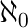 | aleph-null | infinite cardinality of natural numbers set | |
| 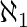 | aleph-one | cardinality of countable ordinal numbers set | |
| Ø | empty set | Ø = { } | C = {Ø} |
| universal set | set of all possible values | ||
| 0 | natural numbers / whole numbers set (with zero) | 0 = {0,1,2,3,4,...} | 0 ∈ 0 |
| 1 | natural numbers / whole numbers set (without zero) | 1 = {1,2,3,4,5,...} | 6 ∈ 1 |
| integer numbers set | = {...-3,-2,-1,0,1,2,3,...} | -6 ∈ | |
| rational numbers set | = {x | x=a/b, a,b∈} | 2/6 ∈ | |
| real numbers set | = {x | -∞ < x <∞} | 6.343434∈ | |
| complex numbers set | = {z | z=a+bi, -∞<a<∞, -∞<b<∞} | 6+2i ∈ |
Logic symbols
| Symbol | Symbol Name | Meaning / definition | Example |
|---|---|---|---|
| ⋅ | and | and | x ⋅ y |
| ^ | caret / circumflex | and | x ^ y |
| & | ampersand | and | x & y |
| + | plus | or | x + y |
| ∨ | reversed caret | or | x ∨ y |
| | | vertical line | or | x | y |
| x' | single quote | not - negation | x' |
| x | bar | not - negation | x |
| ¬ | not | not - negation | ¬ x |
| ! | exclamation mark | not - negation | ! x |
| ⊕ | circled plus / oplus | exclusive or - xor | x ⊕ y |
| ~ | tilde | negation | ~ x |
| ⇒ | implies | ||
| ⇔ | equivalent | if and only if (iff) | |
| ↔ | equivalent | if and only if (iff) | |
| ∀ | for all | ||
| ∃ | there exists | ||
| ∄ | there does not exists | ||
| ∴ | therefore | ||
| ∵ | because / since |
Calculus & analysis symbols
| Symbol | Symbol Name | Meaning / definition | Example |
|---|---|---|---|
| 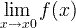 | limit | limit value of a function | |
| ε | epsilon | represents a very small number, near zero | ε → 0 |
| e | e constant / Euler's number | e = 2.718281828... | e = lim (1+1/x)x , x→∞ |
| y ' | derivative | derivative - Lagrange's notation | (3x3)' = 9x2 |
| y '' | second derivative | derivative of derivative | (3x3)'' = 18x |
| y(n) | nth derivative | n times derivation | (3x3)(3) = 18 |
| 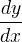 | derivative | derivative - Leibniz's notation | d(3x3)/dx = 9x2 |
| 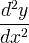 | second derivative | derivative of derivative | d2(3x3)/dx2 = 18x |
| 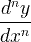 | nth derivative | n times derivation | |
| 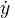 | time derivative | derivative by time - Newton's notation | |
| 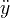 | time second derivative | derivative of derivative | |
| Dx y | derivative | derivative - Euler's notation | |
| Dx2y | second derivative | derivative of derivative | |
| 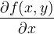 | partial derivative | ∂(x2+y2)/∂x = 2x | |
| ∫ | integral | opposite to derivation | ∫ f(x)dx |
| ∫∫ | double integral | integration of function of 2 variables | ∫∫ f(x,y)dxdy |
| ∫∫∫ | triple integral | integration of function of 3 variables | ∫∫∫ f(x,y,z)dxdydz |
| ∮ | closed contour / line integral | ||
| ∯ | closed surface integral | ||
| ∰ | closed volume integral | ||
| [a,b] | closed interval | [a,b] = {x | a ≤ x ≤ b} | |
| (a,b) | open interval | (a,b) = {x | a < x < b} | |
| i | imaginary unit | i ≡ √-1 | z = 3 + 2i |
| z* | complex conjugate | z = a+bi → z*=a-bi | z* = 3 - 2i |
| z | complex conjugate | z = a+bi → z = a-bi | z = 3 - 2i |
| Re(z) | real part of a complex number | z = a+bi → Re(z)=a | Re(3 - 2i) = 3 |
| Im(z) | imaginary part of a complex number | z = a+bi → Im(z)=b | Im(3 - 2i) = -2 |
| | z | | absolute value/magnitude of a complex number | |z| = |a+bi| = √(a2+b2) | |3 - 2i| = √13 |
| arg(z) | argument of a complex number | The angle of the radius in the complex plane | arg(3 + 2i) = 33.7° |
| ∇ | nabla / del | gradient / divergence operator | ∇f (x,y,z) |
| 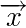 | vector | ||
| unit vector | |||
| x * y | convolution | y(t) = x(t) * h(t) | |
| 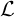 | Laplace transform | F(s) = {f (t)} | |
| 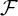 | Fourier transform | X(ω) = {f (t)} | |
| δ | delta function | ||
| ∞ | lemniscate | infinity symbol |
Numeral symbols
| Name | Western Arabic | Roman | Eastern Arabic | Hebrew |
|---|---|---|---|---|
| zero | 0 | ٠ | ||
| one | 1 | I | ١ | א |
| two | 2 | II | ٢ | ב |
| three | 3 | III | ٣ | ג |
| four | 4 | IV | ٤ | ד |
| five | 5 | V | ٥ | ה |
| six | 6 | VI | ٦ | ו |
| seven | 7 | VII | ٧ | ז |
| eight | 8 | VIII | ٨ | ח |
| nine | 9 | IX | ٩ | ט |
| ten | 10 | X | ١٠ | י |
| eleven | 11 | XI | ١١ | יא |
| twelve | 12 | XII | ١٢ | יב |
| thirteen | 13 | XIII | ١٣ | יג |
| fourteen | 14 | XIV | ١٤ | יד |
| fifteen | 15 | XV | ١٥ | טו |
| sixteen | 16 | XVI | ١٦ | טז |
| seventeen | 17 | XVII | ١٧ | יז |
| eighteen | 18 | XVIII | ١٨ | יח |
| nineteen | 19 | XIX | ١٩ | יט |
| twenty | 20 | XX | ٢٠ | כ |
| thirty | 30 | XXX | ٣٠ | ל |
| forty | 40 | XL | ٤٠ | מ |
| fifty | 50 | L | ٥٠ | נ |
| sixty | 60 | LX | ٦٠ | ס |
| seventy | 70 | LXX | ٧٠ | ע |
| eighty | 80 | LXXX | ٨٠ | פ |
| ninety | 90 | XC | ٩٠ | צ |
| one hundred | 100 | C | ١٠٠ | ק |
Greek alphabet letters
| Upper Case Letter | Lower Case Letter | Greek Letter Name | English Equivalent | Letter Name Pronounce |
|---|---|---|---|---|
| Α | α | Alpha | a | al-fa |
| Β | β | Beta | b | be-ta |
| Γ | γ | Gamma | g | ga-ma |
| Δ | δ | Delta | d | del-ta |
| Ε | ε | Epsilon | e | ep-si-lon |
| Ζ | ζ | Zeta | z | ze-ta |
| Η | η | Eta | h | eh-ta |
| Θ | θ | Theta | th | te-ta |
| Ι | ι | Iota | i | io-ta |
| Κ | κ | Kappa | k | ka-pa |
| Λ | λ | Lambda | l | lam-da |
| Μ | μ | Mu | m | m-yoo |
| Ν | ν | Nu | n | noo |
| Ξ | ξ | Xi | x | x-ee |
| Ο | ο | Omicron | o | o-mee-c-ron |
| Π | π | Pi | p | pa-yee |
| Ρ | ρ | Rho | r | row |
| Σ | σ | Sigma | s | sig-ma |
| Τ | τ | Tau | t | ta-oo |
| Υ | υ | Upsilon | u | oo-psi-lon |
| Φ | φ | Phi | ph | f-ee |
| Χ | χ | Chi | ch | kh-ee |
| Ψ | ψ | Psi | ps | p-see |
| Ω | ω | Omega | o | o-me-ga |
Roman numerals
| Number | Roman numeral |
|---|---|
| 0 | not defined |
| 1 | I |
| 2 | II |
| 3 | III |
| 4 | IV |
| 5 | V |
| 6 | VI |
| 7 | VII |
| 8 | VIII |
| 9 | IX |
| 10 | X |
| 11 | XI |
| 12 | XII |
| 13 | XIII |
| 14 | XIV |
| 15 | XV |
| 16 | XVI |
| 17 | XVII |
| 18 | XVIII |
| 19 | XIX |
| 20 | XX |
| 30 | XXX |
| 40 | XL |
| 50 | L |
| 60 | LX |
| 70 | LXX |
| 80 | LXXX |
| 90 | XC |
| 100 | C |
| 200 | CC |
| 300 | CCC |
| 400 | CD |
| 500 | D |
| 600 | DC |
| 700 | DCC |
| 800 | DCCC |
| 900 | CM |
| 1000 | M |
| 5000 | V |
| 10000 | X |
| 50000 | L |
| 100000 | C |
| 500000 | D |
| 1000000 | M |